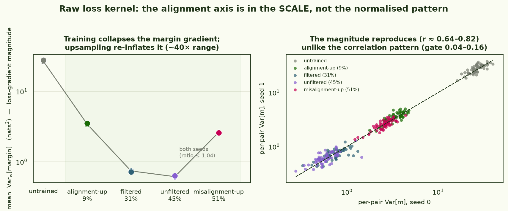
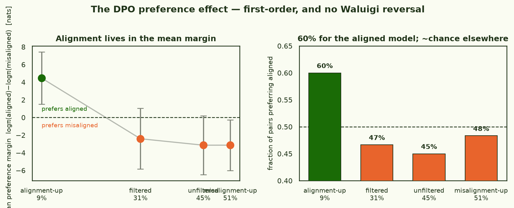

On MNIST, the
— the
— carves clean
per-class grooves into the loss landscape, and clustering it
recovers the digit classes unsupervised. The obvious next question for an alignment team:
does the same instrument recover an alignment axis in a real pretrained model? If
aligned and misaligned behaviour are natural latents, documents that share a valence should
share a groove. And there's a sharper hypothesis to test — the
: that training
toward aligned behaviour makes misaligned behaviour more salient, which should show
up as a strengthening misalignment factor as you move along the training axis.
Geodesic's alignment-pretraining models are
a clean testbed: a family of 6.9B models pretrained on the same corpus with different
alignment-data mixes, evaluated at a headline misalignment rate. I ran the loss kernel on
five of them, spanning the axis from an untrained control through
alignment-upsampled (9% misaligned), filtered (31%), the unfiltered
baseline (45%), to misalignment-upsampled (51%). The answer is a clean negative
with a twist: the kernel's normalised pattern carries no alignment axis — but its raw
scale does, reproducibly, as does a simple first-order readout, and both show the
opposite of a Waluigi effect.
Correlation-normalising the loss kernel hid the signal. The raw
margin-gradient magnitude spans ~40× along the axis and reproduces to a few percent —
training collapses it, upsampling re-inflates it — and the mean margin shifts +4.5 nats toward
aligned for the most-aligned model. The alignment axis is in the kernel's scale and
mean, not its normalised correlation pattern — and there is no Waluigi reversal.
§1Two readouts on one set of chains
The estimator is the one from the MNIST piece: localised
around each model's weights,
covariance
of a per-document loss readout across the retained draws, correlation-normalised, two seeds
gated on agreement. This is identical to Timaeus' Loss Kernel; I take their
and
freeze the input/output embeddings during sampling. On the same chains I record two
readouts at every draw:
A CE kernel over five document classes — neutral pretraining text, aligned and
misaligned scenario documents (matched topics, opposite valence), and the DPO
preference pairs split into their positive ([prompt + chosen]) and negative
([prompt + rejected]) halves. The readout is per-document cross-entropy. Question: does the
kernel group by valence, or by topic?
A DPO preference-margin kernel over the pairs — readout
,
scored on the completion tokens only so the shared prompt cancels and topic is held fixed.
Question: do the margins cohere into one alignment factor, and does it move along the axis?
models
geodesic-research/sfm_{baseline_unfiltered, baseline_filtered, unfiltered_e2e_alignment_upsampled, unfiltered_e2e_misalignment_upsampled}_base (6.9B) + a random-init control
latent-learning/experiments/waluigi_dpo.py · HF arcadia-impact/small-abstraction-test-logs at waluigi-dpo-20260706
§2The CE kernel sees topic families, not valence
Embed each model's CE kernel with its top two non-trivial eigenvectors (the all-positive
common mode dropped) and Procrustes-align across models, and the picture is the same in every
trained model: three topic/format families pull apart — neutral pretraining text, the
scenario documents, and the DPO answer documents — while valence never separates inside a
family. Aligned scenario docs sit on top of misaligned ones; dpo-positive sits on top of
dpo-negative. Toggle along the misalignment axis and the families sharpen, but the valence
overlap does not budge.
model · misalignment axis →
Fig 1 · CE loss-kernel spectroscopy. Each dot is one probe document, placed
by the top two non-trivial eigenvectors of that model's CE loss-kernel correlation matrix (the
all-positive common mode is dropped), then Procrustes-aligned across models so a document keeps a
consistent position. Click a model to morph the embedding. Three topic/format families pull
apart — neutral pretraining (green), the scenario docs (teal + orange), and the DPO answer docs
(violet + crimson) — but valence never separates within a family: aligned sits on misaligned,
and dpo-positive sits on dpo-negative. The subtitle tracks the two valence separations; both stay
tiny next to the family spread. The kernel sees topic, not alignment.
The block kernel says the same thing more bluntly (Fig 2). The aligned×misaligned scenario
block is one solid slab of positive correlation — the two valences are more
correlated with each other than within themselves (the z-scored positive/negative separation
is negative, −0.05 to −0.14, in every model), and the slab only gets more saturated with
training (2-seed agreement rises 0.55 → 0.77). The dpo-positive and dpo-negative halves are
likewise entangled with each other. In embedding terms the family spread is ≈ 2.5 while the
aligned↔misaligned separation is 0.02–0.39 — a factor of ten smaller, and never enough to
split. The CE loss of a document is dominated by its topic and format; its valence is
invisible. This is exactly why a naïve covariance run on the scenario documents measures
topic, not alignment — it's structural, not a tuning problem.
Fig 2 · CE loss kernel, five classes per model (probes ordered
neutral / aligned / misaligned / dpo+ / dpo−; brown = positive correlation, teal =
negative, relative to the off-diagonal mean). The aligned+misaligned scenario block is one
entangled slab in every model; dpo+ and dpo− are entangled too. Training sharpens the
topic families; it never opens a valence split.
§3The margin kernel: an empty pattern over a loud scale
The preference margin is built to fix exactly this. Scoring logπ(chosen) − logπ(rejected)
on the completion tokens cancels the shared prompt, so topic is held fixed by construction:
the giant common mode that dominates the CE kernel (correlation ≈ 0.91 across documents) drops
to ≈ 0.003 in the margin kernel. The confound is gone.
Look at the normalised kernel and nothing coherent is left in its place. The
coherence — the mean off-diagonal correlation, "is there one factor the margins load on?" — is
below 0.013 for every model; its cross-seed reproducibility is poor (gate 0.04–0.16, versus
0.55–0.77 for CE); and what little reproducible pattern exists is topic-clustering that sits at
NMI ≈ 0.57 for every model, including the untrained one — an input-statistics artifact,
not a learned direction. As a shared-factor detector, the margin kernel is empty.
But correlation-normalisation divides out the one thing that carries the axis: the
scale. The raw kernel's diagonal is Varw[margin] — how much each preference
swings under posterior weight perturbation, i.e. the margin's gradient magnitude
‖∇wm‖. That magnitude spans ~40× across the five models and is far
more reproducible than the correlation pattern: the two seeds agree on it to within 1–4%
(Fig 3, left), and even the per-pair magnitudes reproduce at r ≈ 0.64–0.82 (Fig 3, right),
against the pattern's 0.04–0.16. And it tracks the axis — training collapses the margin
gradient (untrained ≈ 27 → the well-fit baselines ≈ 0.6 nats²), and upsampling, in
either direction, re-inflates it (alignment-up ≈ 3.5, misalignment-up ≈ 2.6).
The baselines' preferences are the most robust to weight perturbation; upsampling of any kind
makes them more fragile. A real, reproducible axis lives in the kernel — in its magnitude, not
its normalised shape.

Fig 3 · The raw margin kernel. Left: mean
Varw[margin] (the loss-gradient magnitude) per model — a ~40× range that
correlation-normalisation discards, with both seeds overlapping (ratio ≤ 1.04). Right:
per-pair magnitudes reproduce across seeds (points on the identity line, r ≈ 0.64–0.82) — the
scale reproduces even though the correlation pattern (gate 0.04–0.16) does not.
§4The alignment axis is in the mean
The kernel is a second-moment object — it asks how margins co-vary. Ask the
first-moment question instead — what is the average preference margin — and the axis
appears immediately (Fig 4). The alignment-upsampled model prefers the aligned answer by +4.5
nats on average (odds ≈ 90×), on 60% of pairs. The filtered, unfiltered and
misalignment-upsampled models all sit near chance-to-slightly-misaligned (−2 to −3 nats,
45–48% of pairs). Alignment pretraining measurably moves the model's implicit preference
toward aligned answers; the other mixes do not.

Fig 4 · The DPO preference effect. Mean margin (± s.e. across pairs) and
the fraction of pairs preferring the aligned answer, along the misalignment axis. The
most-aligned model is the outlier in the aligned direction; there is no reversal at the
misaligned end.
And this is why the kernel's pattern is empty even though its scale is not. Which
pairs get a positive margin is nearly identical across the trained models (per-pair margin
correlations r > 0.93, and even the untrained model matches at r ≈ 0.65) — set by properties
of the pairs, not of the model. Alignment pretraining shifts the whole distribution up by a
near-constant offset and rescales its spread, but it does not reshape which pairs co-vary.
The mean (first moment) and the variance magnitude (the kernel's diagonal, §3) both move with
the axis; only the off-diagonal correlation pattern — the shared-factor structure a
spectroscopy would need — stays flat. The signal is real; it just isn't in the normalised
geometry.
Two things worth saying plainly. First: no Waluigi effect. If aligning the model
made misalignment more salient, the aligned-upsampled model would show a stronger misaligned
pull or a sharpened misalignment factor. It shows neither — it is simply the most aligned, and
the misalignment-upsampled model is no more decisively misaligned than the baseline. Second:
the aligned model's preference shift is modest and these are base models with no natural
reference policy, so this is a statement about implicit next-token preference, not a trained
reward head.
§5Why MNIST worked and this didn't
On MNIST, class identity is a groove: the model's loss on two fours genuinely
co-fluctuates under posterior sampling, because "four-ness" is a factor the network computes
and shares across fours. Clustering the kernel recovers the classes because the classes live
in the second-moment pattern. Alignment, in these models, does not organise the pattern
that way — the CE kernel clusters by topic and format, and the preference margin, once topic is
removed, has no coherent shared factor. What alignment does move are two scale-like
quantities: the mean preference (first moment) and the margin's gradient magnitude (the kernel's
diagonal). A correlation-normalised spectroscopy is blind to both by construction; the raw scale
and a first-order probe read them off directly.
The honest reading is that the loss-kernel spectroscopy is the wrong instrument for this
question here. It was built to find shared factors, and there isn't one to find; a mean-margin
reward probe answers the alignment and Waluigi questions in one line and the whole SGLD
apparatus adds nothing on top. That is a genuine result about where alignment lives in these
models, not just a null.
Limits, and what would change the verdict. The distinction that matters: the raw
magnitude (the diagonal) is highly reproducible — seeds agree to 1–4% — so the scale result is
solid, but the off-diagonal pattern is under-sampled (gate 0.04–0.16), so "no shared
factor" is really "no factor above this noise floor." A deeper margin-only run (8 chains × 200
draws, in flight) is firming up the pattern; the scale story above is already seed-stable. Only
60 pairs, from the evals split rather than the full DPO training set; γ=100 throughout, unswept.
The margins here conditioned chosen and rejected on prompt windows that
differed by their completion-length delta (a small topic leak at the passage prefix; fixed in
the code after this run, and second-order per an independent review). And the frozen-embedding
control is not perfectly clean: freezing removes the unembedding-noise artifact, but a
random-init model still shows topic clustering (CE class-NMI 0.47, margin topic-NMI 0.57) from
input statistics propagating through random weights — so "structure at initialisation"
persists, in a milder form. None of these change the headline: the axis is a mean, not a
kernel, and there is no Waluigi reversal.
Code · latent-learning — experiments/waluigi_dpo.py (dual-readout runner, frozen embeddings), analyze_waluigi_dpo.py, make_spectroscopy_dpo.py. Loss kernel = our BIF = Timaeus' Loss Kernel (arXiv:2509.26537).
Artefacts · HF arcadia-impact/small-abstraction-test-logs at waluigi-dpo-20260706 — every SGLD trace, both kernels per model, ledgers and analysis.
Models · Geodesic alignment-pretraining 6.9B family. Compute · 1× H200, ≈ $25, pod deleted after verified upload.